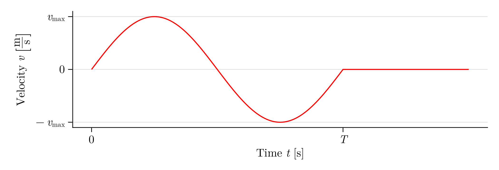

Pressure wave in bar
In this tutorial, a cuboid bar is created. A velocity pulse in the form of one period of a sine wave is applied to create a pressure wave that propagates through the bar.
First import the Peridynamics.jl package:
using PeridynamicsTo get started, some parameters used to for this simulation are defined. These are the length of the bar lx, the width and height lyz and the number of points in the width npyz.
lx = 0.2
lyz = 0.002
npyz = 44With these parameters the point spacing can be calculated:
Δx = lyz / npyz0.0005A cuboid body according to the ordinary state-based model with the specified dimensions and point spacing is then created:
pos, vol = uniform_box(lx, lyz, lyz, Δx)
body = Body(OSBMaterial(), pos, vol)Body{OSBMaterial{NoCorrection}, Peridynamics.OSBPointParameters}(OSBMaterial{NoCorrection}(), 6400, [-0.09975 -0.09925 … 0.09924999999999999 0.09974999999999999; -0.00075 -0.00075 … 0.00075 0.00075; -0.00075 -0.00075 … 0.00075 0.00075], [1.25e-10, 1.25e-10, 1.25e-10, 1.25e-10, 1.25e-10, 1.25e-10, 1.25e-10, 1.25e-10, 1.25e-10, 1.25e-10 … 1.25e-10, 1.25e-10, 1.25e-10, 1.25e-10, 1.25e-10, 1.25e-10, 1.25e-10, 1.25e-10, 1.25e-10, 1.25e-10], Bool[1, 1, 1, 1, 1, 1, 1, 1, 1, 1 … 1, 1, 1, 1, 1, 1, 1, 1, 1, 1], Dict{Symbol, Vector{Int64}}(), Peridynamics.OSBPointParameters[], [0, 0, 0, 0, 0, 0, 0, 0, 0, 0 … 0, 0, 0, 0, 0, 0, 0, 0, 0, 0], Peridynamics.SingleDimBC[], Peridynamics.PosDepSingleDimBC[], Peridynamics.SingleDimIC[], Peridynamics.PointSetsPreCrack[])Failure is prohibited throughout the body:
failure_permit!(body, false)Following material parameters are specified:
| material parameter | value |
|---|---|
| Horizon $ δ $ | $3.015 \cdot Δx$ |
| Density $ρ$ | $ 7850\,\mathrm{kg}\,\mathrm{m}^{-3}$ |
| Young's modulus $E$ | $ 210 \, \mathrm{GPa}$ |
| Poisson's ratio $ν$ | $0.25$ |
| critical strain $ε_c$ | $0.01$ |
material!(body, horizon=3.015Δx, rho=7850.0, E=210e9, nu=0.25, epsilon_c=0.01)Point set :left including the first row of points in x-direction is created:
point_set!(x -> x < -lx / 2 + 1.2Δx, body, :left)The velocity boundary condition of the form
\[ {v}_x (t) = \begin{cases} v_\mathrm{max} \cdot \sin(2\pi \cdot \frac{t}{T}) \qquad & \forall \; 0 \leq t \leq T \\ 0 &\text{else} \end{cases}\]
is applied to point set :left. The parameters used for this excitation are period length T and amplitude vmax.
T, vmax = 1.0e-5, 2.0
velocity_bc!(t -> t < T ? vmax * sin(2π / T * t) : 0.0, body, :left, :x) The Velocity Verlet algorithm is used as time integration method and 2000 time steps are calculated:
vv = VelocityVerlet(steps=2000)VelocityVerlet(-1.0, 2000, -1.0, 0.7)Then the storage path is defined:
path = joinpath(@__DIR__, "results", "xwave", "xwave_osb")"/home/runner/work/Peridynamics.jl/Peridynamics.jl/docs/build/generated/results/xwave/xwave_osb"The job is now defined with the specified settings and parameters.
job = Job(body, vv; path=path)Job{Body{OSBMaterial{NoCorrection}, Peridynamics.OSBPointParameters}, VelocityVerlet, Peridynamics.ExportOptions}(Body{OSBMaterial{NoCorrection}, Peridynamics.OSBPointParameters}(OSBMaterial{NoCorrection}(), 6400, [-0.09975 -0.09925 … 0.09924999999999999 0.09974999999999999; -0.00075 -0.00075 … 0.00075 0.00075; -0.00075 -0.00075 … 0.00075 0.00075], [1.25e-10, 1.25e-10, 1.25e-10, 1.25e-10, 1.25e-10, 1.25e-10, 1.25e-10, 1.25e-10, 1.25e-10, 1.25e-10 … 1.25e-10, 1.25e-10, 1.25e-10, 1.25e-10, 1.25e-10, 1.25e-10, 1.25e-10, 1.25e-10, 1.25e-10, 1.25e-10], Bool[0, 0, 0, 0, 0, 0, 0, 0, 0, 0 … 0, 0, 0, 0, 0, 0, 0, 0, 0, 0], Dict(:left => [1, 401, 801, 1201, 1601, 2001, 2401, 2801, 3201, 3601, 4001, 4401, 4801, 5201, 5601, 6001]), Peridynamics.OSBPointParameters[Peridynamics.OSBPointParameters(0.0015075000000000002, 7850.0, 2.1e11, 0.25, 8.4e10, 1.4e11, 8.4e10, 8.4e10, 37989.00000000001, 0.01, 1.553178552499763e23)], [1, 1, 1, 1, 1, 1, 1, 1, 1, 1 … 1, 1, 1, 1, 1, 1, 1, 1, 1, 1], Peridynamics.SingleDimBC[Peridynamics.SingleDimBC{Main.var"#3#4"}(Main.var"#3#4"(), :velocity_half, :left, 0x01)], Peridynamics.PosDepSingleDimBC[], Peridynamics.SingleDimIC[], Peridynamics.PointSetsPreCrack[]), VelocityVerlet(-1.0, 2000, -1.0, 0.7), Peridynamics.ExportOptions(true, "/home/runner/work/Peridynamics.jl/Peridynamics.jl/docs/build/generated/results/xwave/xwave_osb", "/home/runner/work/Peridynamics.jl/Peridynamics.jl/docs/build/generated/results/xwave/xwave_osb/vtk", "/home/runner/work/Peridynamics.jl/Peridynamics.jl/docs/build/generated/results/xwave/xwave_osb/logfile.log", 10, [:displacement, :damage]))The last step is submitting the job to start the simulation.
submit(job);